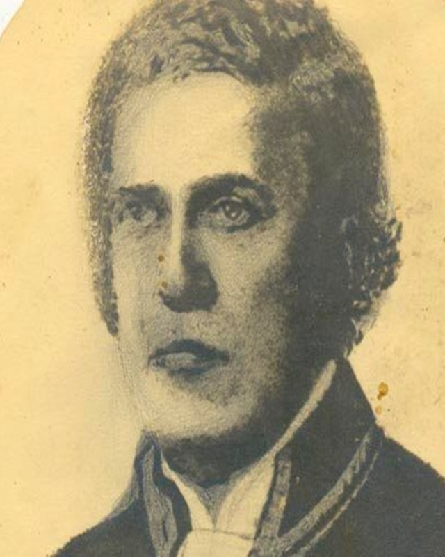

Líder • Revoluação Pernambucana
André de Albuquerque Maranhão
Um dos líderes da Revolução de 1817 (conhecida como Revolução Pernambucana). É lembrado como um dos líderes corajosos e idealistas da Revolução Pernambucana.
Ler Biografia →